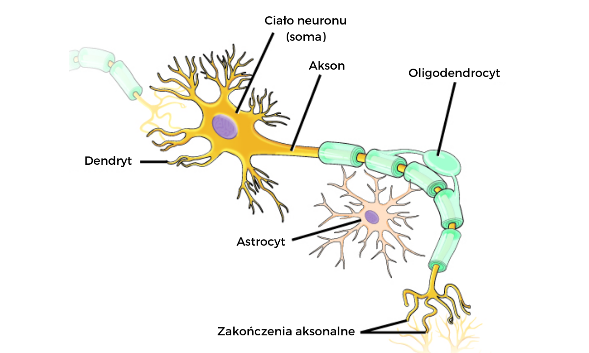
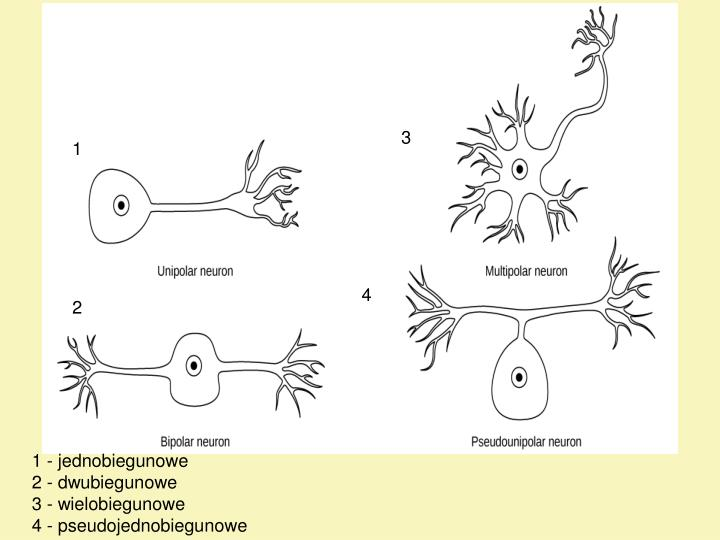
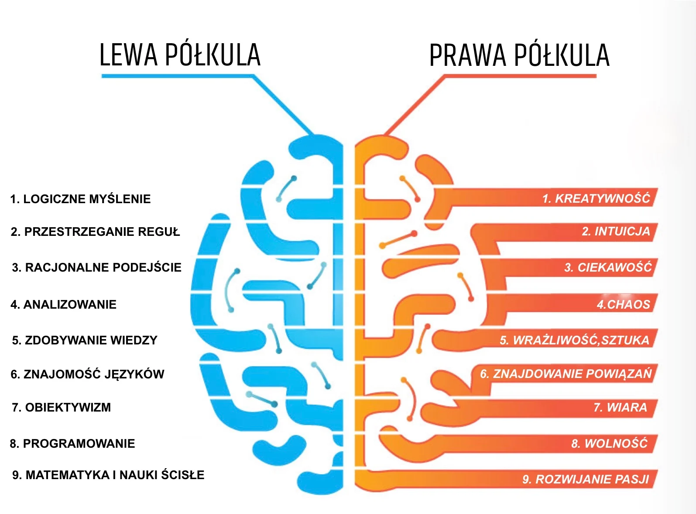
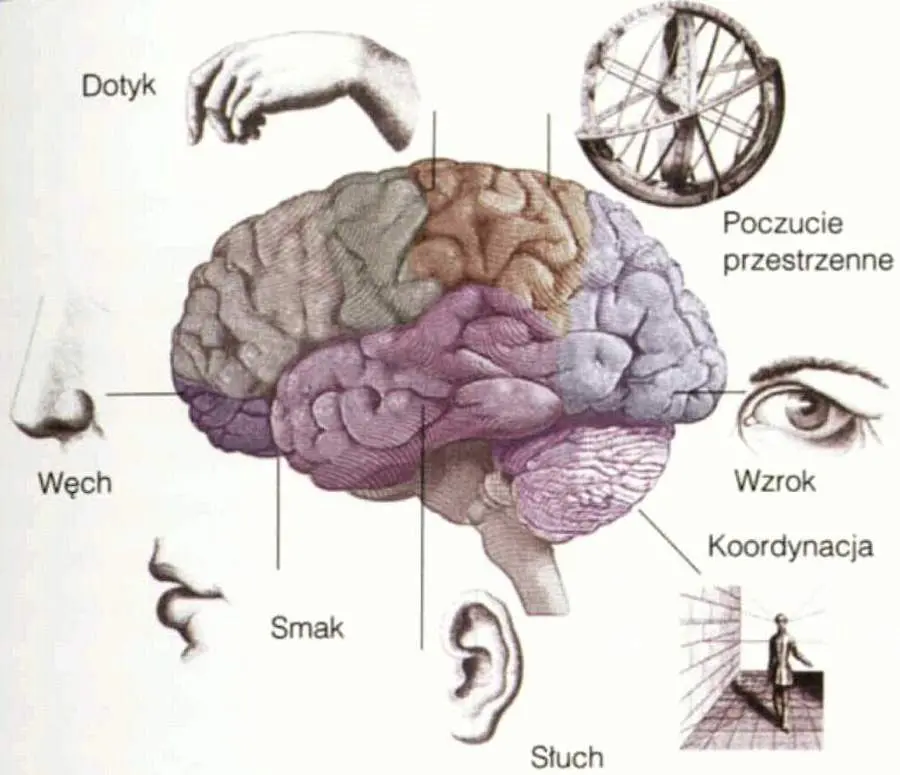
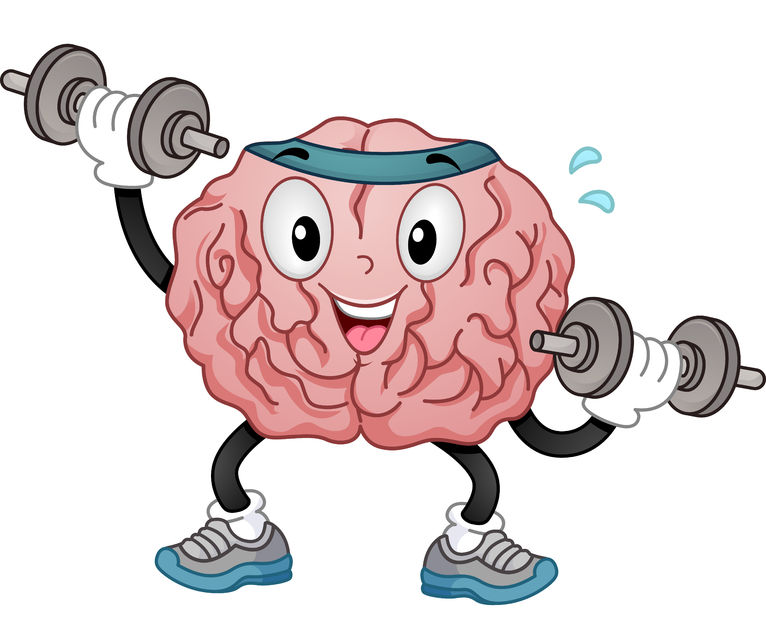
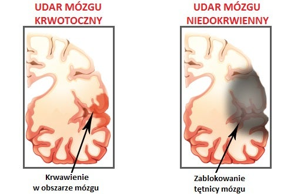
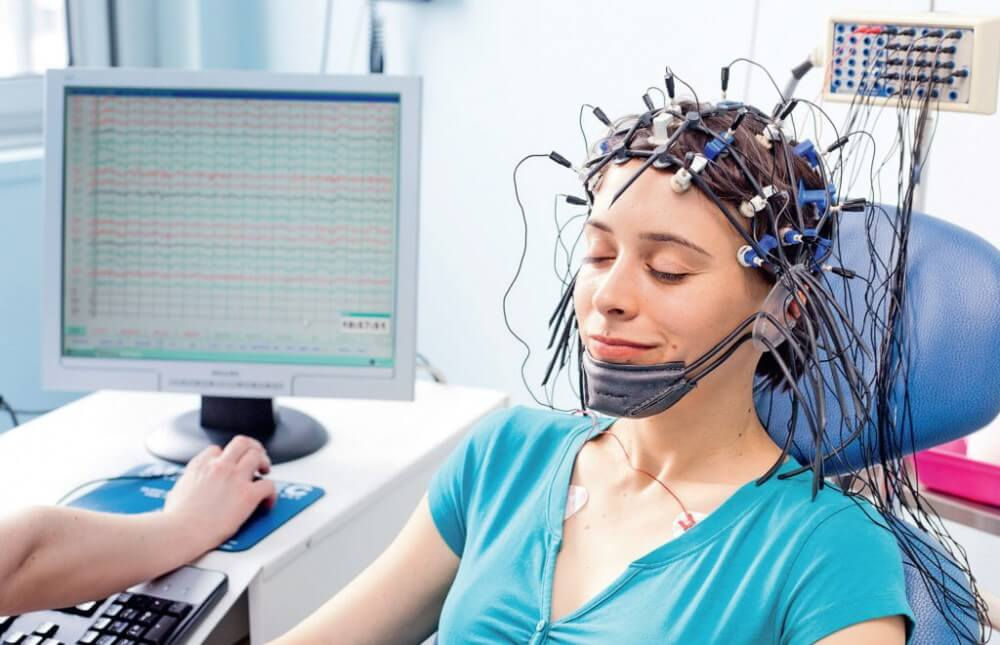
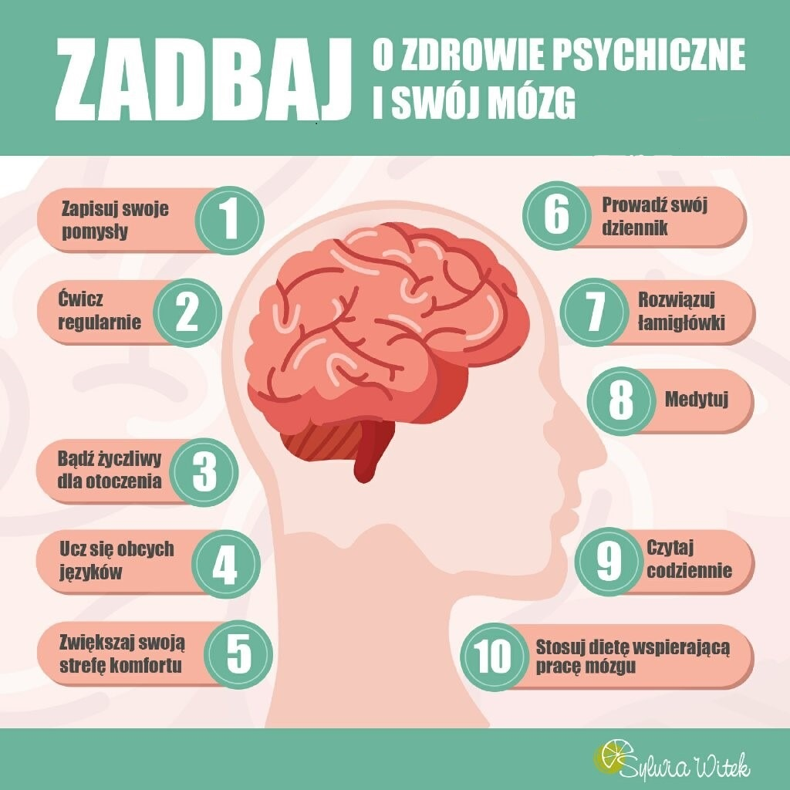

Mózg to organ znajdujący się w czaszce człowieka i zwierząt, który kontroluje różne funkcje życiowe, takie jak myślenie, ruch, pamięć i emocje. Składa się z miliardów neuronów, które przesyłają sygnały elektryczne, umożliwiając działanie organizmu. To centralny punkt zarządzający naszym zachowaniem i funkcjami życiowymi.
Wprowadzenie do Mózgu
Budowa Anatomiczna Mózgu
Budowa anatomiczna mózgu jest niezwykle złożona i składa się z:
Płat Ciemieniowy (Parietalny)
Płat ciemieniowy znajduje się z tyłu górnej części mózgu. Odpowiada za przetwarzanie informacji sensorycznych, takich jak dotyk, ból, i informacje związane z pozycją ciała w przestrzeni.
Płat Czołowy (Czołowy)
Płat czołowy jest zlokalizowany w przedniej części mózgu, tuż za czołem. Jest centralny dla wielu funkcji wyższych, takich jak myślenie abstrakcyjne, planowanie, kontrola zachowań społecznych, i podejmowanie decyzji.
Płat Potyliczny (Potyliczny)
Płat potyliczny znajduje się w tylnej części mózgu. Jest kluczowy dla przetwarzania informacji wzrokowych i percepcji wzrokowej. Pomaga nam rozpoznawać kształty, kolory i twarze oraz interpretować informacje o otoczeniu.
Płat Skroniowy (Skroniowy)
Płat skroniowy znajduje się na bocznej części mózgu, blisko uszu. Odpowiada za przetwarzanie dźwięków i kontrolę zmysłu słuchu. Jest również zaangażowany w zrozumienie mowy oraz zdolność komunikacji.
Móżdżek (Cerebellum)
Móżdżek jest zlokalizowany pod płatem potylicznym, przyśrodkowo w mózgowiu. Pełni kluczową rolę w koordynacji ruchowej, równowadze i kontroli mięśniowej. Pomaga w precyzyjnych ruchach i utrzymaniu stabilności postawy ciała.
Pień Mózgu (Brainstem)
Pniem mózgu to część mózgu łącząca go z rdzeniem kręgowym. Składa się z trzech głównych obszarów: mostu, śródmózgowia i rdzenia przedłużonego. Kontroluje podstawowe funkcje życiowe, takie jak oddychanie, regulację serca, połykanie i budzenie.
Neurony: Podstawowe Jednostki Mózgu
Neurony, zwane również komórkami nerwowymi, są podstawowymi jednostkami budulcowymi mózgu i całego układu nerwowego. Mają kluczowe znaczenie dla przekazywania informacji w organizmach i są odpowiedzialne za funkcje komunikacyjne mózgu.









Budowa neuronu
Neurony, zwane również komórkami nerwowymi, są podstawowymi jednostkami budulcowymi mózgu i całego układu nerwowego. Mają kluczowe znaczenie dla przekazywania informacji w organizmach i są odpowiedzialne za funkcje komunikacyjne mózgu.
Przekazywanie sygnałów
Neurony przekazują sygnały elektryczne i chemiczne. Sygnał elektryczny przemieszcza się wzdłuż aksonu i jest przekazywany do innych neuronów poprzez synapsy, czyli połączenia między dendrytami jednej komórki a aksonami drugiej. W synapsach sygnał jest przekazywany w postaci neuroprzekaźników, takich jak neurotransmitery.
Funkcje neuronów
Neurony są odpowiedzialne za przetwarzanie informacji sensorycznych, kontrolę ruchów mięśniowych, myślenie, uczenie się, pamięć, emocje i wiele innych funkcji mózgu. To dzięki neuronowym sieciom mózg jest zdolny do kompleksowych operacji intelektualnych i kontrolowania różnych aspektów życia codziennego.
Plastyczność neuronalna
Neurony wykazują zdolność do plastyczności neuronalnej, co oznacza, że mogą dostosowywać swoje połączenia i funkcje w odpowiedzi na doświadczenia i uczenie się. To istotne dla procesów przystosowawczych i rozwijania się mózgu.
Różne rodzaje neuronów
Istnieje wiele różnych rodzajów neuronów, z różnymi kształtami i funkcjami. Na przykład, neurony czuciowe przekazują informacje sensoryczne, neurony ruchowe kontrolują ruchy mięśniowe, a neurony interneuronalne przekazują sygnały między innymi neuronami.
Znaczenie dla nauki i medycyny
Zrozumienie działania neuronów jest kluczowe dla badania mózgu, rozwoju terapii neurologicznych oraz leczenia zaburzeń psychicznych i neurologicznych.
Neurony: Podstawowe Jednostki Mózgu
Kontrola Ruchów
Mózg kontroluje ruchy mięśniowe, umożliwiając nam chodzenie, bieganie, manipulację przedmiotami i wiele innych czynności.
Przetwarzanie Sensoryczne
Mózg przetwarza informacje sensoryczne z różnych zmysłów, takich jak wzrok, słuch, dotyk, smak i węch.
Myślenie i Rozwiązywanie Problemów
Obszary mózgu związane z myśleniem abstrakcyjnym, planowaniem i analizą odpowiadają za rozwiązywanie problemów.
Pamięć
Mózg ma zdolność do przechowywania informacji w formie pamięci, takiej jak pamięć krótkotrwała i długotrwała.
Emocje
Obszary limbiczne mózgu są związane z kontrolą emocji, takimi jak strach, radość, gniew i smutek.
Sensoryka i Percepcja
Sensoryka
Sensoryka to dziedzina nauki zajmująca się badaniem zmysłów ludzkich i zwierzęcych oraz sposób, w jaki odbieramy bodźce z otoczenia. Zmysły, takie jak wzrok, słuch, dotyk, smak i węch, odgrywają kluczową rolę w postrzeganiu świata i zdobywaniu informacji z otoczenia.
Percepcja
Percepcja to proces przetwarzania informacji sensorycznych przez mózg w celu zrozumienia i interpretacji otaczającego nas świata. To dzięki percepcji jesteśmy w stanie rozpoznawać obiekty, ludzi, dźwięki i wiele innych aspektów naszego otoczenia.
Zmysły
Zmysły są narzędziami, które umożliwiają nam zbieranie informacji sensorycznych. Każdy zmysł ma swoje specjalne receptory i obszary w mózgu odpowiedzialne za przetwarzanie odbieranych bodźców. Na przykład, oko jest związane z zmysłem wzroku, a ucho z zmysłem słuchu.
Procesy Percepcyjne
Procesy percepcyjne obejmują rozpoznawanie kształtów, kolorów, dźwięków, tekstur i innych cech obiektów i bodźców sensorycznych. Mózg integruje te informacje, tworząc spójny obraz rzeczywistości.
Mózg a Ruch
Koordynacja Ruchowa
Mózg odgrywa kluczową rolę w koordynacji naszych ruchów. Obszary mózgu, takie jak kora ruchowa, kontrolują ruchy mięśniowe i umożliwiają nam wykonywanie precyzyjnych czynności, takich jak chodzenie, bieganie i manipulowanie przedmiotami.
Mózg a Uczenie Się Ruchów
Proces uczenia się ruchów, zwany także motoryką, wiąże się z mózgiem. To dzięki mózgowi uczymy się wykonywania nowych umiejętności ruchowych, takich jak jazda na rowerze czy gra na instrumencie muzycznym. Mózg tworzy i wzmacnia połączenia neuronalne, co umożliwia opanowanie nowych ruchów.
Ruch a Zdrowie Mózgu
Regularna aktywność fizyczna ma pozytywny wpływ na zdrowie mózgu. Ćwiczenia fizyczne poprawiają przepływ krwi do mózgu, stymulują wzrost nowych neuronów i mogą pomagać w zachowaniu zdolności poznawczych na starsze lata.
Zaburzenia Ruchowe i Mózg
Uszkodzenia mózgu lub zaburzenia neurologiczne mogą prowadzić do problemów z ruchem. Przykłady to choroba Parkinsona, udar mózgu i pourazowe uszkodzenia mózgu, które wpływają na kontrolę ruchów.
Terapie i Rehabilitacja
W przypadku osób z zaburzeniami ruchowymi, terapie fizyczne i rehabilitacja często skupiają się na przywracaniu funkcji ruchowych poprzez trening i stymulację mózgu. Jest to istotna część procesu rehabilitacji.
Badania nad Mózgiem a Ruchem
Naukowcy prowadzą badania nad zrozumieniem, jak mózg kontroluje ruchy i jak można poprawić zdolność do ruchu w przypadku osób z różnymi schorzeniami. Badania te obejmują neuroobrazowanie i analizy neurofizjologiczne.
Badania na Mózgu
Neuroobrazowanie
Neuroobrazowanie to technika badawcza pozwalająca na tworzenie obrazów struktur i funkcji mózgu. Obejmuje metody takie jak tomografia komputerowa, rezonans magnetyczny i pozytonowa tomografia emisyjna.
Elektroencefalografia (EEG)
EEG to metoda monitorowania aktywności elektrycznej mózgu. Elektrony są umieszczane na powierzchni głowy, co pozwala na rejestrowanie fal mózgowych i analizę funkcji mózgu w czasie rzeczywistym.
Neuronauka
Neuronauka to interdyscyplinarna dziedzina badawcza, która łączy neurobiologię, psychologię i informatykę. Bada ona funkcje i struktury mózgu oraz sposób, w jaki mózg wpływa na zachowanie.
Psychologia Kognitywna
Psychologia kognitywna zajmuje się badaniem procesów poznawczych, takich jak myślenie, pamięć i percepcja. Badania nad mózgiem są integralną częścią psychologii kognitywnej.
Genetyka Mózgu
Badania nad genetyką mózgu koncentrują się na zrozumieniu, jak geny wpływają na rozwój i funkcje mózgu oraz jak czynniki genetyczne mogą przyczyniać się do zaburzeń psychicznych.
Farmakologia Mózgu
Farmakologia mózgu bada wpływ leków i substancji chemicznych na funkcje mózgu. To kluczowa dziedzina w opracowywaniu leków na zaburzenia psychiczne i neurologiczne.
Badania Kliniczne
Badania kliniczne koncentrują się na diagnozowaniu i leczeniu zaburzeń mózgu. Obejmuje to badania nad terapiami, interwencjami i rekonstrukcją funkcji mózgu po urazach.
Etyka w Badaniach nad Mózgiem
Badania nad mózgiem są związane z ważnymi kwestiami etycznymi, takimi jak prywatność pacjentów, zgoda na udział w badaniach i etyka eksperymentów na zwierzętach.
Ochrona i Zdrowy Mózg
Zbilansowana Dieta
Zdrowa dieta odgrywa kluczową rolę w utrzymaniu zdrowego mózgu. Spożywanie różnorodnych pokarmów, zawierających składniki odżywcze, takie jak kwasy tłuszczowe omega-3, witaminy i minerały, może wspomagać funkcje mózgu.
Aktywność Fizyczna
Regularna aktywność fizyczna ma korzystny wpływ na zdrowie mózgu. Ćwiczenia poprawiają przepływ krwi do mózgu, stymulują produkcję neuroprzekaźników i mogą pomagać w utrzymaniu zdolności poznawczych.
Sen i Odpoczynek
Właściwa ilość snu jest niezbędna dla prawidłowego funkcjonowania mózgu. Brak snu może prowadzić do problemów z koncentracją, pamięcią i ogólną wydolnością umysłową.
Unikanie Stresu
Długotrwały stres może negatywnie wpływać na mózg. Techniki relaksacyjne, medytacja i zarządzanie stresem mogą pomóc w utrzymaniu zdrowego mózgu.
Edukacja i Aktywność Umysłowa
Utrzymywanie umysłu w ruchu jest istotne dla zdrowego starzenia się mózgu. Aktywność umysłowa, jak nauka nowych umiejętności czy rozwiązywanie łamigłówek, może wspierać funkcje poznawcze.
Zdrowe Nawyki Żywieniowe
Unikanie nadmiernego spożycia alkoholu i palenia tytoniu jest kluczowe dla zdrowia mózgu. Te substancje mogą negatywnie wpływać na funkcje mózgu i zwiększać ryzyko chorób neurologicznych.
Ochrona Przed Urazami
Zabezpieczanie głowy i unikanie ryzykownych sytuacji może pomóc w ochronie mózgu przed urazami, takimi jak stłuczenia czy wstrząsy mózgu.
Regularne Badania Lekarskie
Regularne wizyty u lekarza mogą pomóc w wczesnym wykrywaniu i leczeniu chorób mózgu oraz innych schorzeń, które mogą wpływać na zdrowie psychiczne.